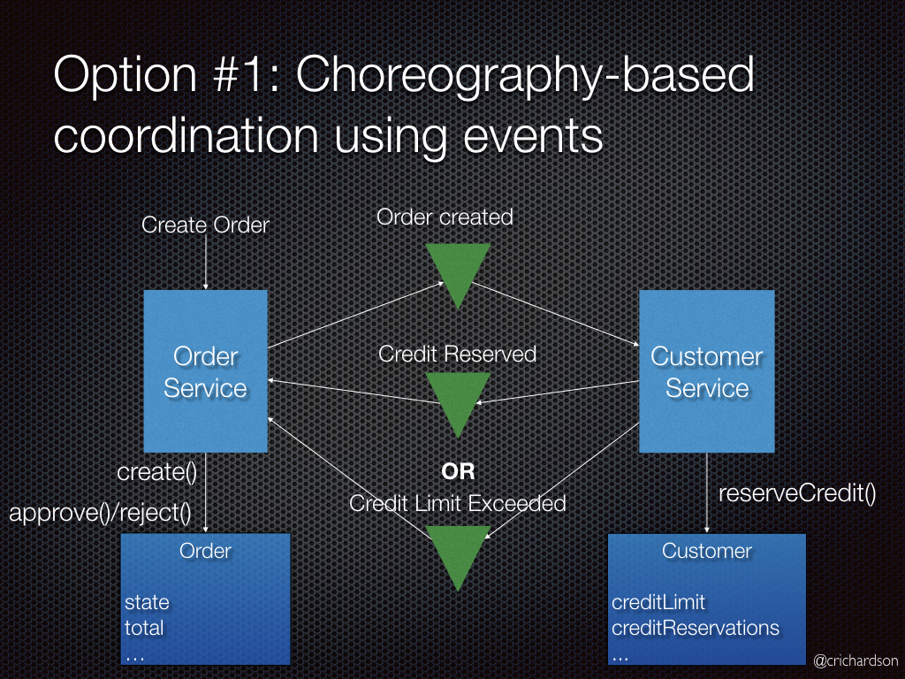
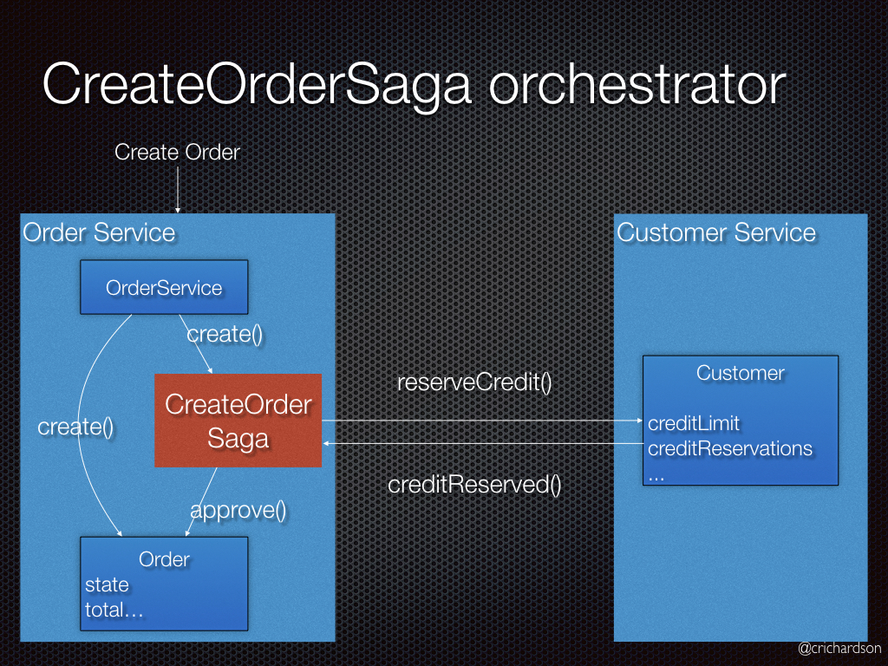
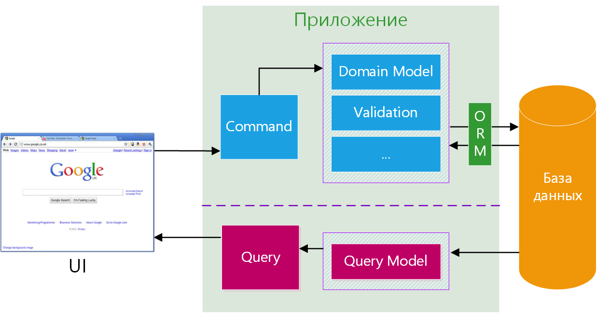

Microservice Patterns
Решение проблем
В каком-либо блоке приложения произошла ошибка(или БД) - один из сервисов отвалился.
Поддержка транзакций между микросервисами
Симметричное распределение нагрузки и сложности бизнес-логики
Для обеспечения последовательных изменений между микросервисами в состояние приложения
Saga
Saga - если мы используем паттерн "Database per Microservice" нам нужно обеспечить согласованность данных
между сервисами.
Необходимо каждую бизнес транзакцию, которая охватывает несколько сервисов, реализовывать как сагу.
Сага представляет собой набор локальных транзакций. Каждая локальная транзакция обновляет базу данных и
публикует сообщение или событие, инициируя следующую локальную транзакцию в саге. Если транзакция
завершилась неудачей, например, из-за нарушения бизнес правил, тогда сага запускает компенсирующие
транзакции, которые откатывают изменения, сделанные предшествующими локальными транзакциями.
Способы координации саг:
Хореография(Choreography)
Хореография(Choreography) - каждая транзакция публикует события, которые запускают транзакции в других
сервисах.

Будут выполнены следующие шаги:
- Order Service (Сервис Заказа) создает Order (Заказ) в статусе pending (в ожидании) и публикует событие
OrderCreated (ЗаказСоздан).
- Customer Service (Сервис Клиента) получает событие и пытается зарезервировать кредит для заказа. После
чего публикует одно из двух событий: CreditReserved (КредитЗарезервирован) или CreditLimitExceeded
(КредитныйЛимитПревышен).
- Order Service (Сервис Заказа) получает событие и изменяет состояние заказа в approved (подтвержден) или
cancelled (отменен).
Оркестровка (Orchestration)
Оркестровка(Orchestration) - оркестратор говорит участникам, какие транзакции должны быть запущены.

Будут выполнены следующие шаги:
- Order Service (Сервис Заказа) создает Order (Заказ) в статусе pending (в ожидании) и создает
CreateOrderSaga (СагаСозданияЗаказа).
- CreateOrderSaga (СагаСозданияЗаказа) отправляет команду ReserveCredit (ЗарезервироватьКредит) в Customer
Service (Сервис Клиента)
- Customer Service (Сервис Клиента) пытается зарезервировать кредит для заказа и отправляет назад ответ
- CreateOrderSaga (СагаСозданияЗаказа) получает ответ и отправляет ApproveOrder (ПодтвердитьЗаказ) or
RejectOrder (ОтменитьЗаказ) команду в Order Service (Сервис Заказа)
- Order Service (Сервис Заказа) изменяет состояние заказа в approved (подтвержден) или cancelled (отменен)
Command and Query Responsibility Segregation(CQRS)
CQRS — это стиль архитектуры, в котором операции чтения отделены от операций записи.
Решает проблему - не симметричное распределение нагрузки и сложности бизнес-логики на read(Query) и
write(Command) - подсистемы Большинство бизнес-правил и сложных проверок находится во write — подсистеме.
При этом читают данные зачастую в разы чаще, чем изменяют.

Недостатки
- Дубликат кода
- Большое количество запросов, для поддержки консистентность.
Event sourcing
Event sourcing - архитектурный шаблон. Все изменения, вносимые в состояние приложения, сохраняются
в той последовательности в которой они происходили.
Помогает эффективно распределять данные между микросервисами.
Преимущества:
- Хранения не объектов, а событий изменения состояний помогает консистенции.
- Надежная система аудирования событий(audit logging).
- В любой момент можно получить актуальное состояние.
- Пониженное сцепление между сущностями.
Недостатки:
- Нужно поддерживать событийность.
- Необходимо реализация CQRS.
- Необходимость поддерживание консистентность.
Database per Microservice
Database per Microservice - микросервисы не имеют доступа к базе соседних сервисов и обращаются между
собой средством REST, или через message broker.
Преимущество
- Слабая связанность сервисов. Изменения в бд одного сервиса не влияют на другие сервисы как при
Shared Database паттерне.
- Каждый сервис может использовать тот тип БД который подходит лучше для его нужд. Например один сервис
может использовать Elastic поиск, второй NoSQL, третий SQL, если этого требует бизнес логика и NFR.
Недостатки
- Реализация бизнес-транзакций, охватывающих несколько сервисов, довольно комплексное задание.
Распределенных транзакций лучше избегать из-за CAP теоремы. Более того, многие современные (NoSQL)
базы данных их не поддерживают.
- Реализация запросов, которые джоинит данные с разных баз данных, не тривиальная задача.
- Сложность управления несколькими базами данных SQL и NoSQL.
Retry pattern
Retry pattern - механизм повторения запросов.
Виды:
- Fixed delay - фиксированное время.
- Incremental delay - время между попытками увеличивается.
- Exponential backoff - время между попытками увеличивается экспоненциально.
Circuit Breaker
Circuit breaker pattern - защищает сервисы от избыточной нагрузки и отказов.
Помогает "Retry pattern" не добить нагруженный сервис количеством запросов.
Как работает:
- Замеряет ошибки – если система часто отвечает сбоем, то "выключает" запросы.
- Блокирует вызовы – на время переключается в режим отказа (open state).
- Пробует восстановиться – спустя время делает тестовые запросы и, если сервис снова работает,
возвращает его в работу.
Timeout pattern
Timeout pattern - ограничивает время ожидания запросов.
Виды timeout:
- Connection timeout - попытка соединения.
- Read/Write(response) timeout - время на запрос.
- Idle Timeout - автоматический разрыв соединения, если оно неактивно в течение определенного времени.
Fallback pattern
Fallback pattern - запасное действие в случае ошибки.
Виды fallback:
- Response by default
- Change client - попробовать другой способ получить данные(если такой есть)
Bulkhead pattern
Bulkhead pattern - используется для изоляции различных компонентов системы, чтобы сбои в одной части
не затронули всю систему. Для повышения отказоустойчивости и изоляции сбоев.
Применение Bulkhead pattern
- Разделение ресурсов — выделение отдельных пулов потоков, соединений с базой данных или очередей
сообщений для разных сервисов.
- Изоляция отказов — если один сервис перегружен или выходит из строя, другие продолжают работать.
- Повышение устойчивости — уменьшение риска каскадных отказов.